Bulk Upload - Journal Entry - Using Template
Excel file (multiple debit/credit) to FLEXCUBE
Journal Entry – bulk upload is a FLEXCUBE feature that allows performing several transactions at one go. For example, debiting one GL and crediting multiple accounts in one single operation.
The bulk upload is useful when having several transactions to be executed for specific purpose. Like salary upload, end of year bonus, and many other cases.
Therefore, instead of executing one transaction for every client/employee, we can put all these transactions in one single file, upload it to FLEXCUBE, and execute it in one operation.
The bulk upload is also useful when migrating balances (internal GLs and customers) from legacy system to Oracle FLEXCUBE.
Having this feature, allows operators to execute hundreds of transactions in a very short time.
1- Prepare Excel template like the following:
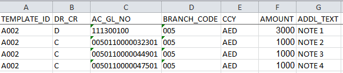
Note: total debit amount should be equal to total credit amount.
2- Import Excel using Oracle SQL Developer: Right click on “TEMPALTE” table and then click on “Import Data…”
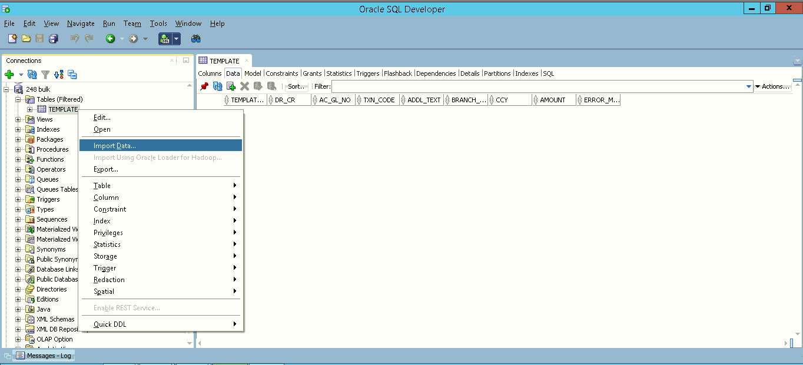
3- Click Next and then click Finish:
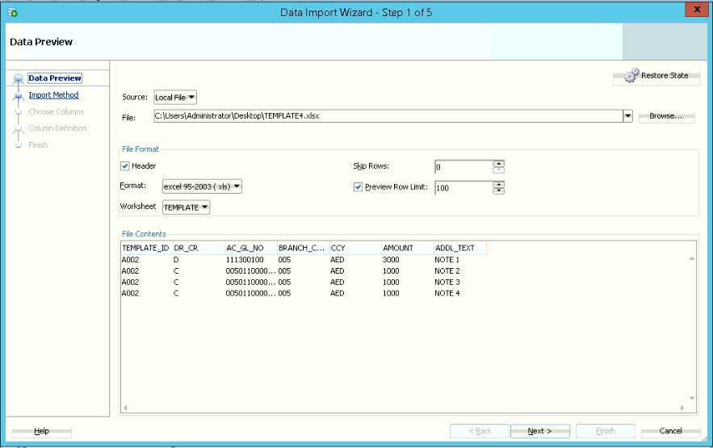
When import complete, you should receive the following message: Task successful and import committed.
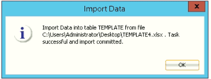
4- Check if there are error messages under ERROR_MSG column
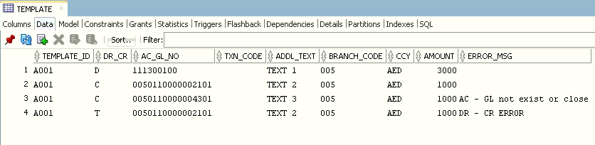
5- Fix all errors and import Excel again. ERROR_MSG should be clean.
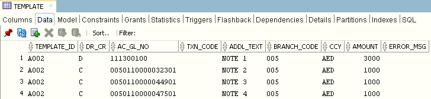
6- Open Oracle FLEXCUBE, to check if the template is successfully populated. Using screen ID: DESJNLPR
In our example, the template ID is A002.
Double click on A002 row to check the detailed page
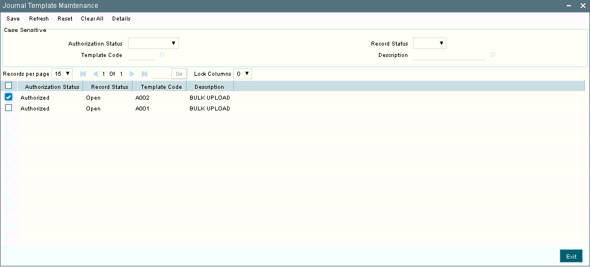
Check if all records exist.
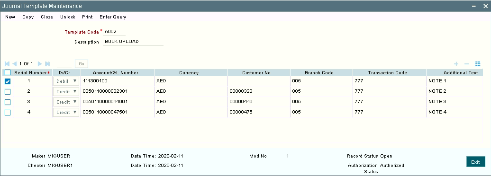
7- Using Maker, create new Journal Entry by fetching records from our template A002. Launch the screen DEDJNLON and click on New
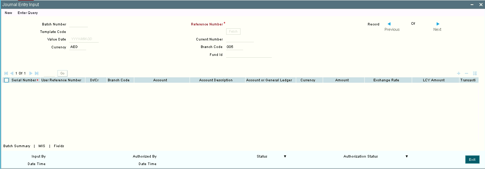
8- A page will open to create new Batch.
Enter value in the Description field. For example: Salary upload. And click on OK button.
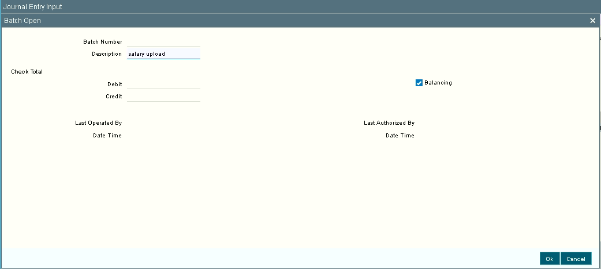
9- The Batch Number is 0002 and it’s created automatically.
Click on Template Code and select our template A002, and then click on Fetch
Select a Value Date and click on Save Button
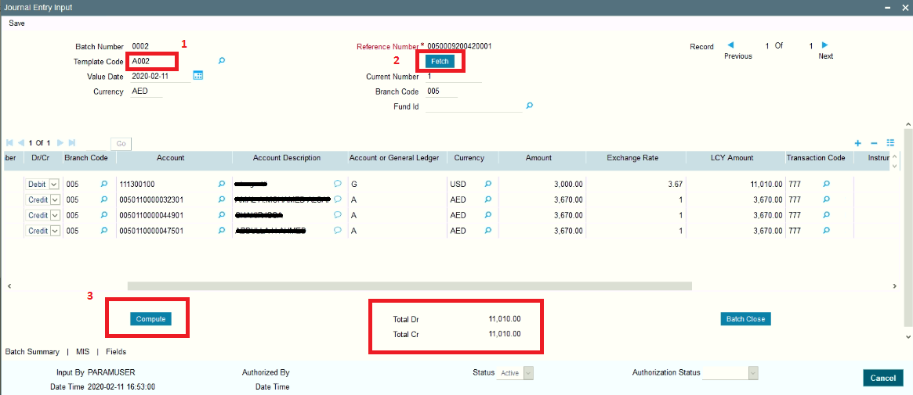
DBA should create this Table:
CREATE TABLE "BULK"."TEMPLATE"
( "TEMPLATE_ID" VARCHAR2(4 CHAR),
"DR_CR" VARCHAR2(1 CHAR),
"AC_GL_NO" VARCHAR2(20 CHAR),
"TXN_CODE" VARCHAR2(12 CHAR),
"ADDL_TEXT" VARCHAR2(350 CHAR),
"BRANCH_CODE" VARCHAR2(3 CHAR),
"CCY" VARCHAR2(3 CHAR),
"AMOUNT" NUMBER,
"ERROR_MSG" VARCHAR2(400 BYTE)
) SEGMENT CREATION IMMEDIATE
PCTFREE 10 PCTUSED 40 INITRANS 1 MAXTRANS 255
NOCOMPRESS LOGGING
STORAGE(INITIAL 131072 NEXT 131072 MINEXTENTS 1 MAXEXTENTS 2147483645
PCTINCREASE 0 FREELISTS 1 FREELIST GROUPS 1
BUFFER_POOL DEFAULT FLASH_CACHE DEFAULT CELL_FLASH_CACHE DEFAULT)
TABLESPACE "FCCDATASML" ;
CREATE OR REPLACE EDITIONABLE TRIGGER "BULK"."TRIGGER1"
BEFORE INSERT ON TEMPLATE
REFERENCING NEW AS NEW OLD AS OLD
FOR EACH ROW
DECLARE
BATCH_COUNT INTEGER;
COUNT_AC INTEGER;
COUNT_GL INTEGER;
DIFF NUMBER;
XSERIAL_NO INTEGER;
XCUST_NO VARCHAR2(20);
XAC_OR_GL VARCHAR2(4);
XTODAY DATE;
XERROR_MSG VARCHAR2(400);
AC_GL_ERROR EXCEPTION;
DR_CR_ERROR EXCEPTION;
PRAGMA EXCEPTION_INIT(AC_GL_ERROR, -20111);
PRAGMA EXCEPTION_INIT(DR_CR_ERROR, -20112);
BEGIN
/*
DESJNLPR: Journal Template Maintenance
DEDJNLON: Journal Entry Input, select from template.
grant all privileges ON STTM_CUST_ACCOUNT TO BULK;
grant all privileges ON DETM_JRNL_TMPL_DETAIL TO BULK;
grant all privileges ON DETM_JRNL_TMPL_MASTER TO BULK;
grant all privileges ON STTM_DATES TO BULK;
grant all privileges ON STTB_ACCOUNT TO BULK;
*/
-- PRE CHECKS
IF(LENGTH(:NEW.TEMPLATE_ID) <> 4) THEN
RETURN;
END IF;
-- PRE CHECKS
IF(UPPER(:NEW.DR_CR) NOT IN ('D','C')) THEN
DELETE FROM FCUBS.DETM_JRNL_TMPL_DETAIL WHERE TEMPLATE_ID = :NEW.TEMPLATE_ID;
DELETE FROM FCUBS.DETM_JRNL_TMPL_MASTER WHERE TEMPLATE_ID = :NEW.TEMPLATE_ID;
XERROR_MSG := 'DR - CR ERROR';
:NEW.ERROR_MSG := XERROR_MSG;
RAISE_APPLICATION_ERROR(-20112,'DR - CR ERROR');
--RETURN;
END IF;
--populate DETM_JRNL_TMPL_DETAIL
XCUST_NO:=NULL;
XERROR_MSG := '';
-- CHECK IF ACCOUNT OR GL
SELECT COUNT(1)
INTO COUNT_AC
FROM FCUBS.STTM_CUST_ACCOUNT WHERE CUST_AC_NO = :NEW.AC_GL_NO
AND RECORD_STAT = 'O' AND AUTH_STAT = 'A';
SELECT COUNT(1)
INTO COUNT_GL
FROM FCUBS.STTB_ACCOUNT WHERE AC_GL_NO = :NEW.AC_GL_NO AND AC_OR_GL = 'G' AND GL_STAT_DE_POST = 'Y';
IF(COUNT_AC = 1) THEN
XAC_OR_GL := 'A';
END IF;
IF(COUNT_GL = 1) THEN
XAC_OR_GL := 'G';
END IF;
IF(COUNT_GL = 0 AND COUNT_AC = 0) THEN
DELETE FROM FCUBS.DETM_JRNL_TMPL_DETAIL WHERE TEMPLATE_ID = :NEW.TEMPLATE_ID;
DELETE FROM FCUBS.DETM_JRNL_TMPL_MASTER WHERE TEMPLATE_ID = :NEW.TEMPLATE_ID;
XERROR_MSG := 'AC - GL not exist or close';
:NEW.ERROR_MSG := XERROR_MSG;
RAISE_APPLICATION_ERROR(-20111, :NEW.AC_GL_NO || ': Not exist or close');
--RETURN;
END IF;
-- END OF: CHECK IF ACCOUNT OR GL
IF(XAC_OR_GL = 'A') THEN
SELECT CUST_NO
INTO XCUST_NO
FROM FCUBS.STTM_CUST_ACCOUNT
WHERE CUST_AC_NO = :NEW.AC_GL_NO;
END IF;
SELECT COUNT(1)
INTO XSERIAL_NO
FROM FCUBS.DETM_JRNL_TMPL_DETAIL WHERE TEMPLATE_ID = :NEW.TEMPLATE_ID;
Insert into FCUBS.DETM_JRNL_TMPL_DETAIL
(TEMPLATE_ID, SERIAL_NO, DR_CR, AC_GL_NO, AC_OR_GL, TXN_CODE, ADDL_TEXT, BRANCH_CODE, CCY, CUST_NO, AMOUNT) values
(:NEW.TEMPLATE_ID, XSERIAL_NO +1, UPPER(:NEW.DR_CR), :NEW.AC_GL_NO, XAC_OR_GL, '777', :NEW.ADDL_TEXT, :NEW.BRANCH_CODE, :NEW.CCY,XCUST_NO, :NEW.AMOUNT);
--populate DETM_JRNL_TMPL_MASTER
SELECT COUNT(1)
INTO BATCH_COUNT
FROM FCUBS.DETM_JRNL_TMPL_MASTER WHERE TEMPLATE_ID = :NEW.TEMPLATE_ID;
IF(BATCH_COUNT = 0) THEN
SELECT TODAY
INTO XTODAY
FROM FCUBS.STTM_DATES
WHERE BRANCH_CODE = :NEW.BRANCH_CODE;
Insert into FCUBS.DETM_JRNL_TMPL_MASTER
(TEMPLATE_ID, DESCRIPTION, RECORD_STAT, AUTH_STAT, MOD_NO, MAKER_ID, MAKER_DT_STAMP, CHECKER_ID, CHECKER_DT_STAMP, ONCE_AUTH) values
(:NEW.TEMPLATE_ID, 'BULK UPLOAD', 'O', 'A', 1, 'MIGUSER', XTODAY, 'MIGUSER1', XTODAY, 'Y');
END IF;
EXCEPTION
WHEN AC_GL_ERROR THEN
DELETE FROM FCUBS.DETM_JRNL_TMPL_DETAIL WHERE TEMPLATE_ID = :NEW.TEMPLATE_ID;
DELETE FROM FCUBS.DETM_JRNL_TMPL_MASTER WHERE TEMPLATE_ID = :NEW.TEMPLATE_ID;
:NEW.ERROR_MSG := XERROR_MSG;
WHEN DR_CR_ERROR THEN
DELETE FROM FCUBS.DETM_JRNL_TMPL_DETAIL WHERE TEMPLATE_ID = :NEW.TEMPLATE_ID;
DELETE FROM FCUBS.DETM_JRNL_TMPL_MASTER WHERE TEMPLATE_ID = :NEW.TEMPLATE_ID;
:NEW.ERROR_MSG := XERROR_MSG;
END;
/
ALTER TRIGGER "BULK"."TRIGGER1" ENABLE;